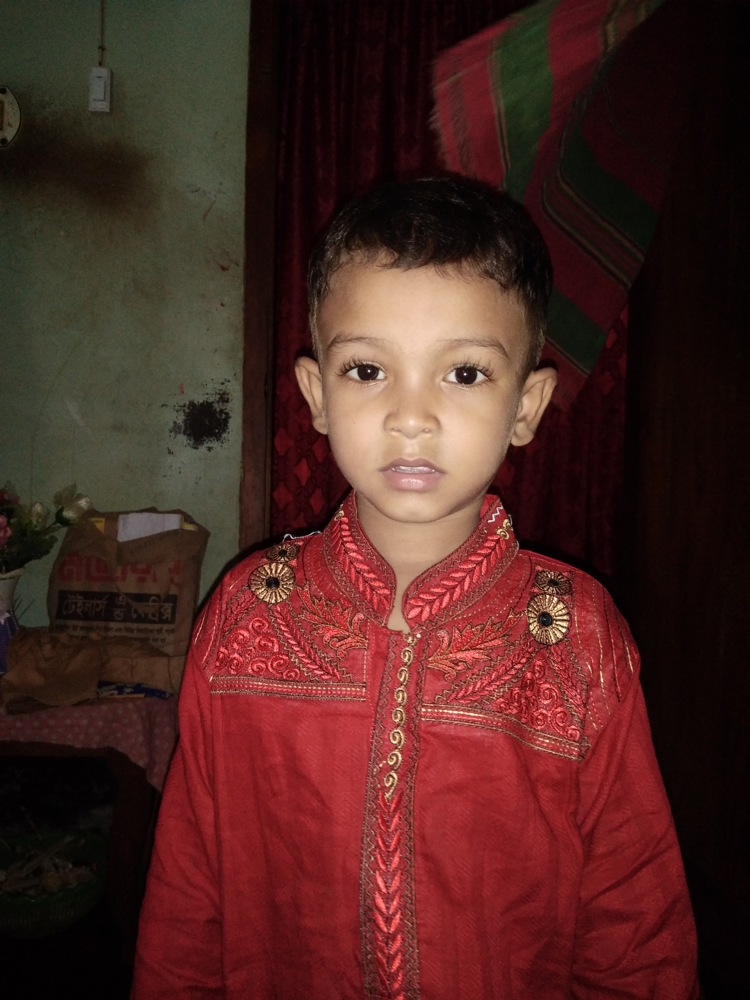

Carousel Slider
First pic
A bug on Twitter leaves Android users exposed
Second pic
A bug on Twitter leaves Android users exposed
Third pic
A bug on Twitter leaves Android users exposed

Fourth pic
A bug on Twitter leaves Android users exposed